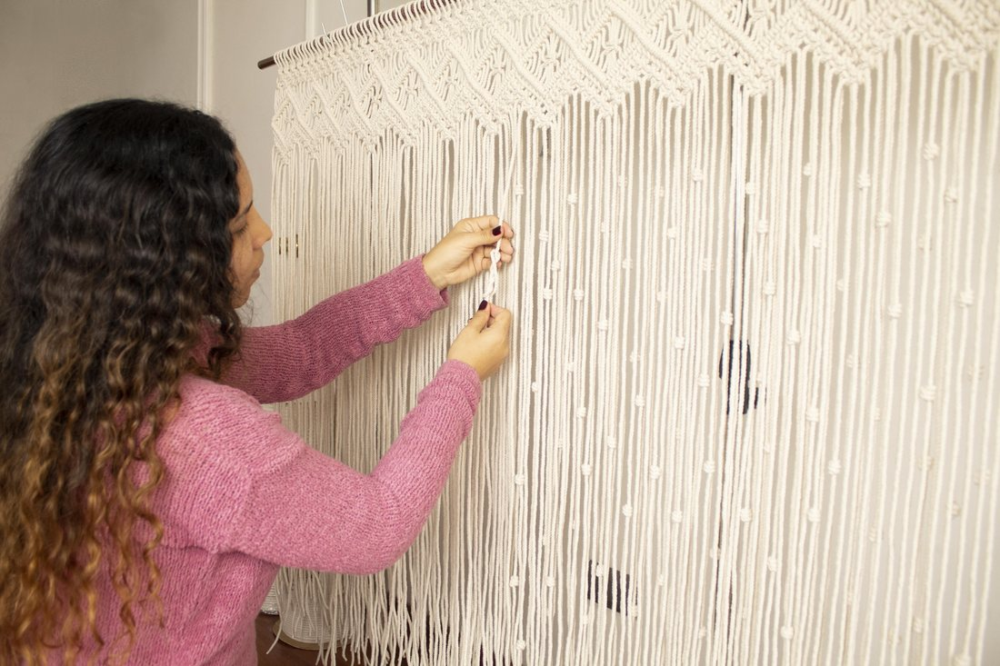
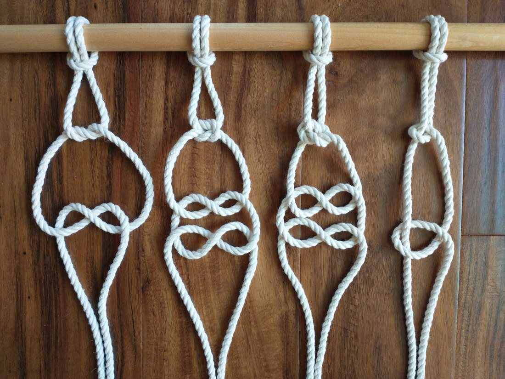
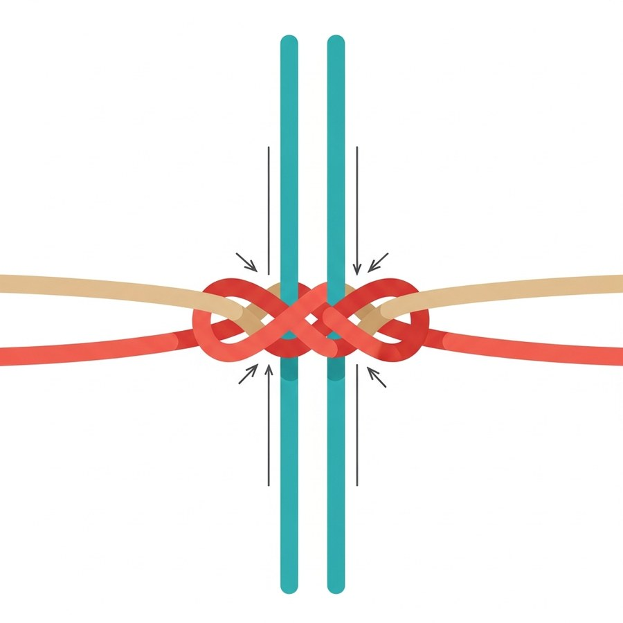
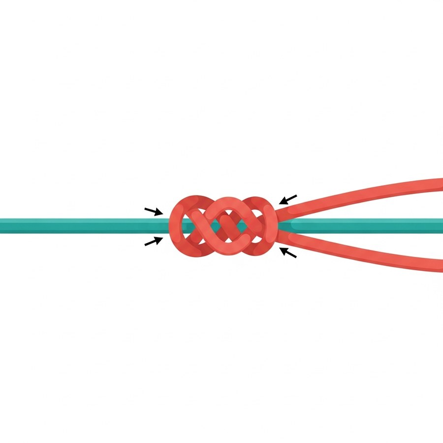
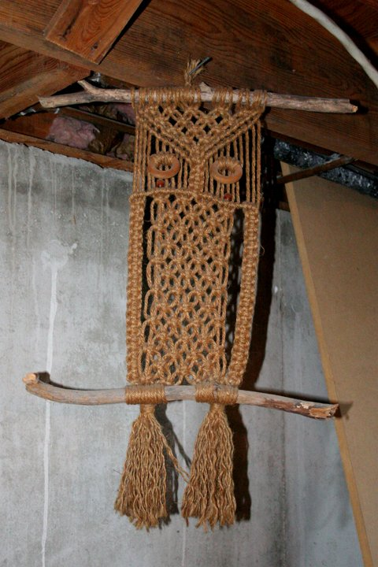
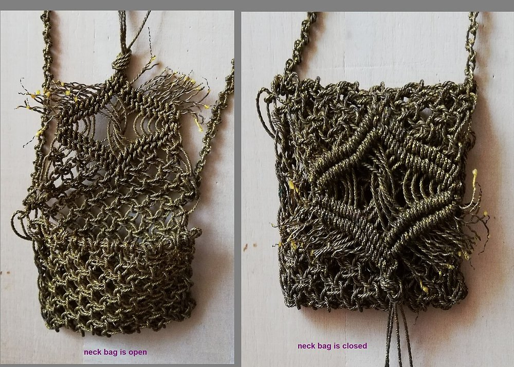
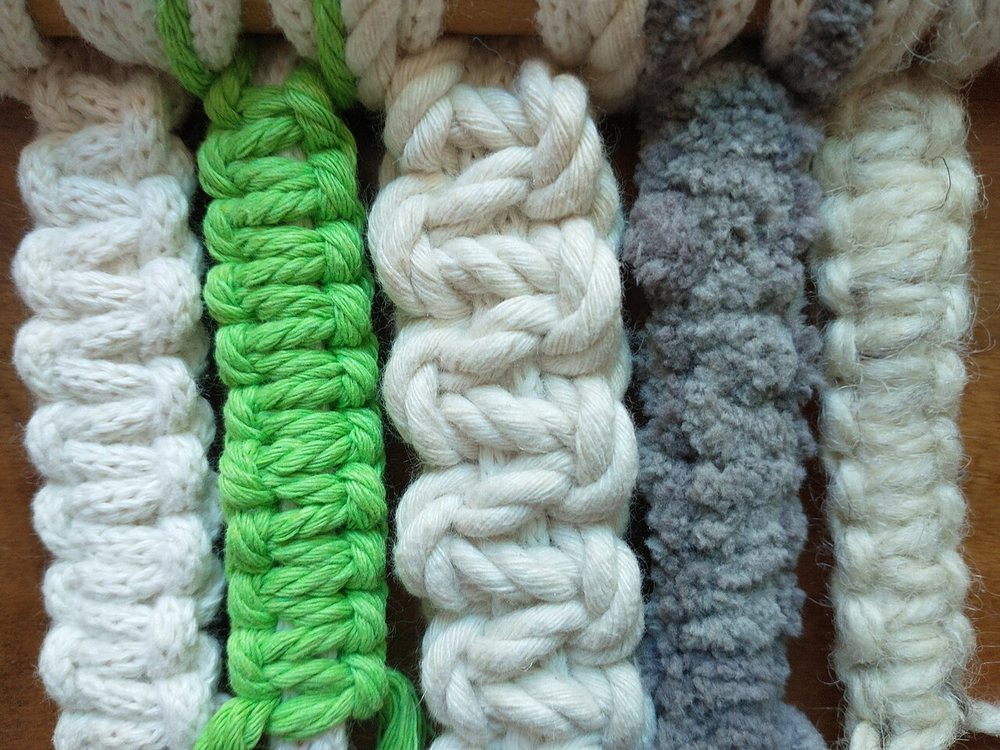
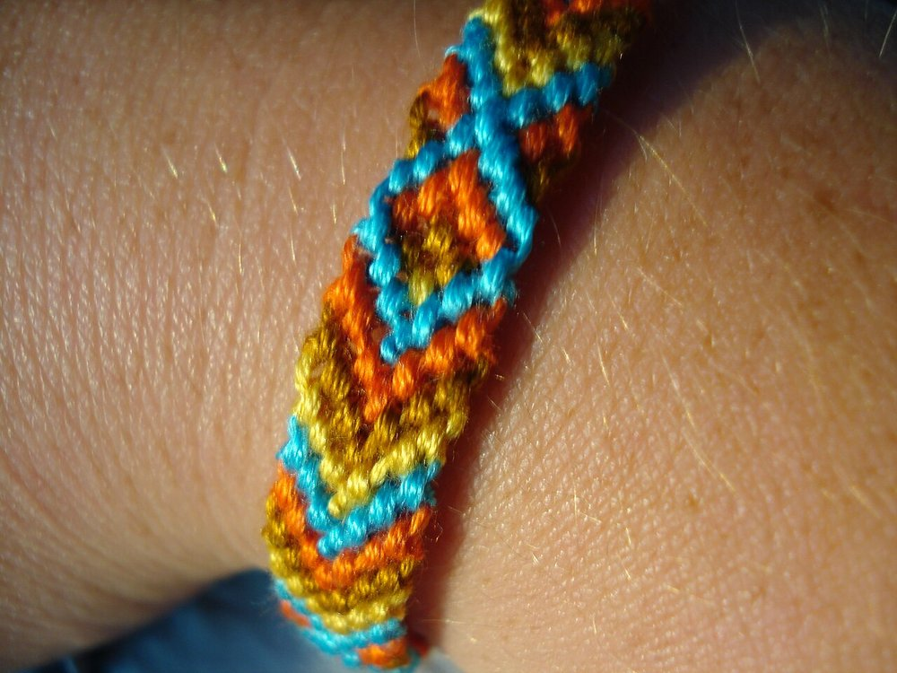
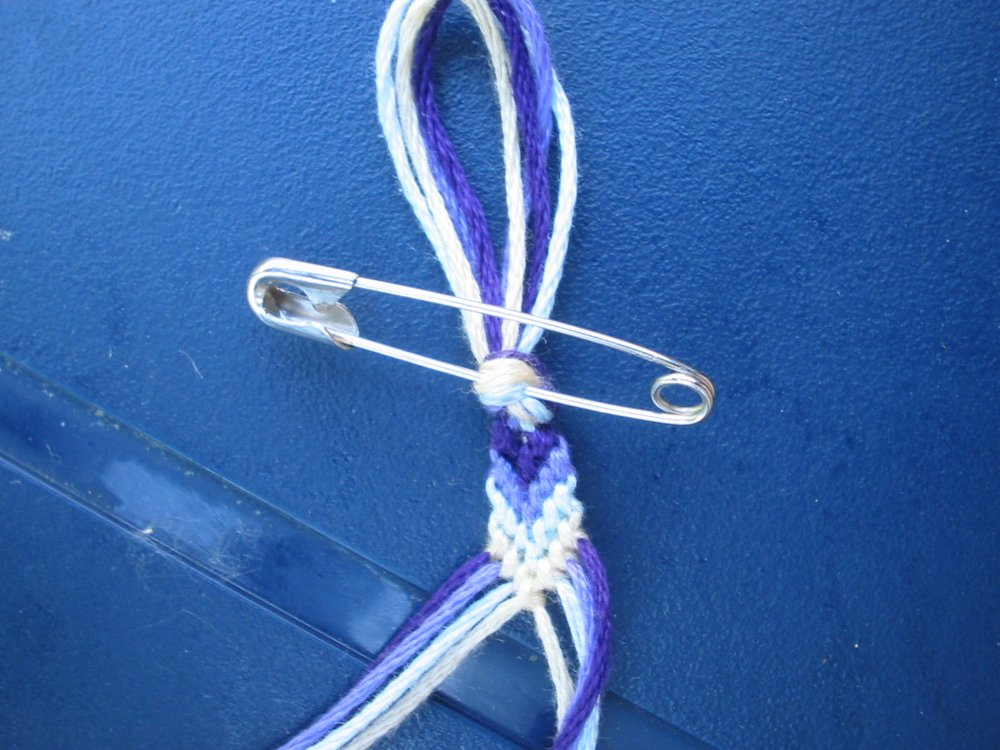

Көркем еңбек · 2-бөлім · Сәндік-қолданбалы өнер Art & Craft · Section 2 · Decorative & Applied Art Художественный труд · Раздел 2 · Декоративно-прикладное искусство
🪢 Тоқу өнері: макраме және фенечкалар
🪢 The Art of Knotting: Macramé & Friendship Bracelets
🪢 Искусство плетения: макраме и фенечки
Жіп пен түйіннен — әсем зат: тек қол, шыдам және бірнеше негізгі түйін. From thread and a knot to a beautiful thing: just your hands, patience and a few basic knots. Из нити и узла — красивая вещь: только руки, терпение и несколько базовых узлов.
Тоқу — түйіндердің өнері Knotting — the Art of Knots Плетение — искусство узлов
Тоқу (плетение) — жіптерді, бауларды немесе жіңішке шнурларды бір-бірімен өріп, түйіндеп әсем зат жасау. Иненің де, ілмектің де қажеті жоқ — тек қол мен түйін. Ең көп тараған түрі — макраме: бұл тек түйіндердің көмегімен өрнек жасайтын тоқу техникасы. Knotting (weaving) means interlacing threads, cords or thin ropes and tying them into a beautiful object. You need no needle and no hook — only your hands and a knot. The most widespread kind is macramé: a technique that builds a pattern using knots alone. Плетение — это переплетение нитей, шнуров или тонких верёвок и завязывание их в красивую вещь. Не нужны ни игла, ни крючок — только руки и узел. Самый известный вид — макраме: техника, в которой узор создаётся одними лишь узлами.
«Макраме» сөзі араб тіліндегі «микрама» (шашақ, тоқылған жиек) сөзінен шыққан. Бұл өнер мыңдаған жыл бұрын пайда болған: теңізшілер ұзақ сапарда арқандарды түйіндеп үйренсе, шеберлер сол түйіндерден перде, кашпо, әшекей жасаған. Бүгінде макраме — интерьерді безендіретін сәнді әрі қолжетімді өнер. The word "macramé" comes from the Arabic "miqrama" (a fringe or knotted edge). The craft is thousands of years old: sailors learned to tie ropes on long voyages, while artisans turned those knots into curtains, plant hangers and jewellery. Today macramé is a fashionable and accessible way to decorate a home. Слово «макраме» происходит от арабского «микрама» (бахрома, плетёная кайма). Это ремесло насчитывает тысячи лет: моряки учились вязать узлы в долгих плаваниях, а мастера превращали эти узлы в занавеси, кашпо и украшения. Сегодня макраме — модный и доступный способ украсить дом.

Негізгі түйіндер The Basic Knots Основные узлы
Барлық макраме бар болғаны бірнеше қарапайым түйіннен құралады. 🔍 Үлкейту үшін суретті басыңыз. Every macramé is built from just a few simple knots. 🔍 Tap an image to enlarge it. Любое макраме строится всего из нескольких простых узлов. 🔍 Нажмите на изображение, чтобы увеличить.

түйіндердің нақты үлгілеріreal knot samplesреальные образцы узлов

шаршы (тегіс) түйін схемасыsquare (flat) knot schemeсхема квадратного узла

репс (тік) түйін схемасыdouble half-hitch schemeсхема репсового узла
Шаршы түйінSquare knotКвадратный узел
Екі шеткі жұмыс жібі екі ортаңғы негіз жібін орай, кезекпен сол-оң байланады. Макрамедегі ең басты түйін.Two outer working cords are tied around two central filler cords, left then right in turn. The single most important knot in macramé.Две крайние рабочие нити завязываются вокруг двух центральных нитей-основы, попеременно слева и справа. Самый главный узел макраме.
Тегіс (жалпақ) түйінFlat knotПлоский узел
Шаршы түйіннің тек бір жартысын қайталасаң, бау өздігінен бұралып, әдемі спираль (винт) пайда болады.If you repeat only one half of the square knot, the cord twists on its own into a pretty spiral.Если повторять только одну половину квадратного узла, шнур сам закручивается в красивую спираль (винт).
Репс түйініDouble half-hitchРепсовый узел
Жұмыс жібі негіз жіпті екі рет орайды. Осы түйінмен тік, көлбеу және қисық сызықтар, өрнек контуры салынады.A working cord wraps twice around an anchor cord. With it you draw straight, diagonal and curved lines and the outlines of a pattern.Рабочая нить дважды обвивает нить-основу. Им «рисуют» прямые, косые и изогнутые линии и контуры узора.
Фриволите түйініFrivolité knotУзел «фриволите»
Қос ілмекті түйін: екі жіп кезекпен бірін-бірі орайды. Жеңіл, ажурлы тор мен шетжиек жасауға ыңғайлы.A double-loop knot: two cords loop around each other in turn. Ideal for a light, openwork net and decorative edging.Двойной петельный узел: две нити поочерёдно обвивают друг друга. Удобен для лёгкой ажурной сетки и каймы.
Не тоқуға болады? What Can You Knot? Что можно сплести?
Кашподан фенечкаға дейін. 🔍 Үлкейту үшін суретті басыңыз. From a plant hanger to a friendship bracelet. 🔍 Tap a photo to enlarge it. От кашпо до фенечки. 🔍 Нажмите на фото, чтобы увеличить.




Фенечканы қалай тоқу керек How to Weave a Friendship Bracelet Как сплести фенечку
Қарапайым тік фенечка — бастаушыларға арналған. A simple straight bracelet — for beginners. Простая прямая фенечка — для начинающих.
Жіптерді дайында.Prepare the threads.Подготовь нити. 4–6 түсті мулинені ал, әрқайсысын ~80 см ұзындықта кес.Take 4–6 colours of embroidery floss and cut each about 80 cm long.Возьми 4–6 цветов мулине и нарежь каждую длиной около 80 см.
Түйіндеп бекіт.Tie and pin.Завяжи и закрепи. Жіптерді жоғарғы жағынан бір түйінге байла да, түйреуішпен жастыққа немесе үстелге бекіт.Knot the threads together at the top and pin them to a cushion or the table with a safety pin.Свяжи нити вместе сверху одним узлом и закрепи булавкой на подушке или столе.
Ретін белгіле.Set the order.Разложи по порядку. Жіптерді сол жақтан оңға қарай қалаған түс ретімен тарат.Spread the threads from left to right in the colour order you like.Разложи нити слева направо в нужном порядке цветов.
Бірінші түйін.The first knot.Первый узел. Сол шеткі жіппен көршісінің үстінен «4» әрпін жаса, ілмекке өткізіп тарт — түйін шықты.With the leftmost thread make a "4" shape over its neighbour, pass it through the loop and pull — that is one knot.Крайней левой нитью сделай поверх соседней «четвёрку», протяни в петлю и затяни — получился узел.
Қос түйін.Double the knot.Двойной узел. Сол жіппен тура сол көршіге дәл осындай түйінді тағы бір рет байла — әр баспалдақ екі түйіннен тұрады.With the same thread tie an identical knot onto the same neighbour once more — each step is two knots.Той же нитью завяжи такой же узел на той же соседней нити ещё раз — каждая ступенька состоит из двух узлов.
Жолды аяқта.Finish the row.Закончи ряд. Сол жіппен барлық жіпке кезекпен түйін байла. Ол енді оң шетке шығады.Tie knots with that thread onto every thread in turn. It now ends up on the right.Завяжи этой нитью узлы по очереди на всех нитях. Теперь она оказалась справа.
Қайтала.Repeat.Повторяй. Жаңа сол шеткі жіппен келесі жолды баста. Қажет ұзындыққа жеткенше жалғастыр.Start the next row with the new leftmost thread. Continue until the bracelet is long enough.Начни новый ряд новой крайней левой нитью. Продолжай, пока браслет не станет нужной длины.
Бекіт.Finish off.Заверши. Соңында жіптерді бір түйінге байла, екі ұшынан өрім (косичка) жаса — байлап кию үшін.At the end tie all threads in a knot and braid both ends so the bracelet can be tied on.В конце свяжи нити узлом и заплети оба конца косичкой — чтобы завязать браслет на руке.

түйреуіш жіптерді ұстап тұрады — қолға ыңғайлыa pin holds the threads — handy for your handsбулавка держит нити — удобно для рук
💡 КеңесTipСовет
Түйіндерді біркелкі қаттылықпен тарт: тым қатты тартсаң — фенечка бұралады, тым босаң — өрнек ашылмайды.Pull every knot with the same tension: too tight and the bracelet curls, too loose and the pattern won't show.Затягивай узлы с одинаковой силой: слишком туго — фенечка скрутится, слишком слабо — узор не проявится.
Материалдар мен құралдар Materials & Tools Материалы и инструменты
Жұмсақ, түрлі-түсті жіп. Фенечка тоқуға ең қолайлы материал.Soft, colourful thread. The best material for friendship bracelets.Мягкая цветная нить. Лучший материал для фенечек.
Жуан әрі жұмсақ. Кашпо, панно, ірі макраме үшін негізгі материал.Thick and soft. The main material for plant hangers, panels and large macramé.Толстый и мягкий. Основной материал для кашпо, панно и крупного макраме.
Табиғи, қатқыл талшық. Эко-стильдегі панно мен себеттерге жарайды.A natural, stiff fibre. Good for eco-style panels and baskets.Натуральное, жёсткое волокно. Подходит для эко-панно и корзинок.
Ағаш таяқша, сақина не ілгек: жіптер соған байланып, тоқу басталады.A wooden dowel, ring or hook: the threads are fixed to it to start the work.Деревянная палочка, кольцо или крючок: к ним крепят нити, чтобы начать работу.
Тоқу кезінде жұмысты бекітіп ұстайды — қол еркін болады.Holds the work still while you knot, leaving your hands free.Удерживает работу во время плетения — руки свободны.
Жіпті кесуге және дайын бұйымның шашағын тегістеуге.For cutting cord and trimming the fringe of a finished piece.Для нарезки нитей и подравнивания бахромы готового изделия.
💬 Қорытынды 💬 In a nutshell 💬 Главное
Макраме мен фенечка — бар болғаны бірнеше түйіннен туатын үлкен өнер. Шаршы, репс және фриволите түйіндерін білсең, олардың қайталануы мен ретінен шексіз өрнек жасай аласың: кашподан бастап достыққа арналған білезікке дейін. Басты сыры — шыдам, біркелкі тартылыс және түйіндердің таза ырғағы. Macramé and friendship bracelets are a whole art born from just a few knots. Once you know the square, half-hitch and frivolité knots, their repetition and order let you make endless patterns — from a plant hanger to a bracelet of friendship. The secret is patience, even tension and a clean rhythm of knots. Макраме и фенечки — это целое искусство, рождённое всего из нескольких узлов. Зная квадратный, репсовый узлы и «фриволите», их повтором и порядком можно создавать бесконечные узоры — от кашпо до браслета дружбы. Главный секрет — терпение, ровное натяжение и чистый ритм узлов.